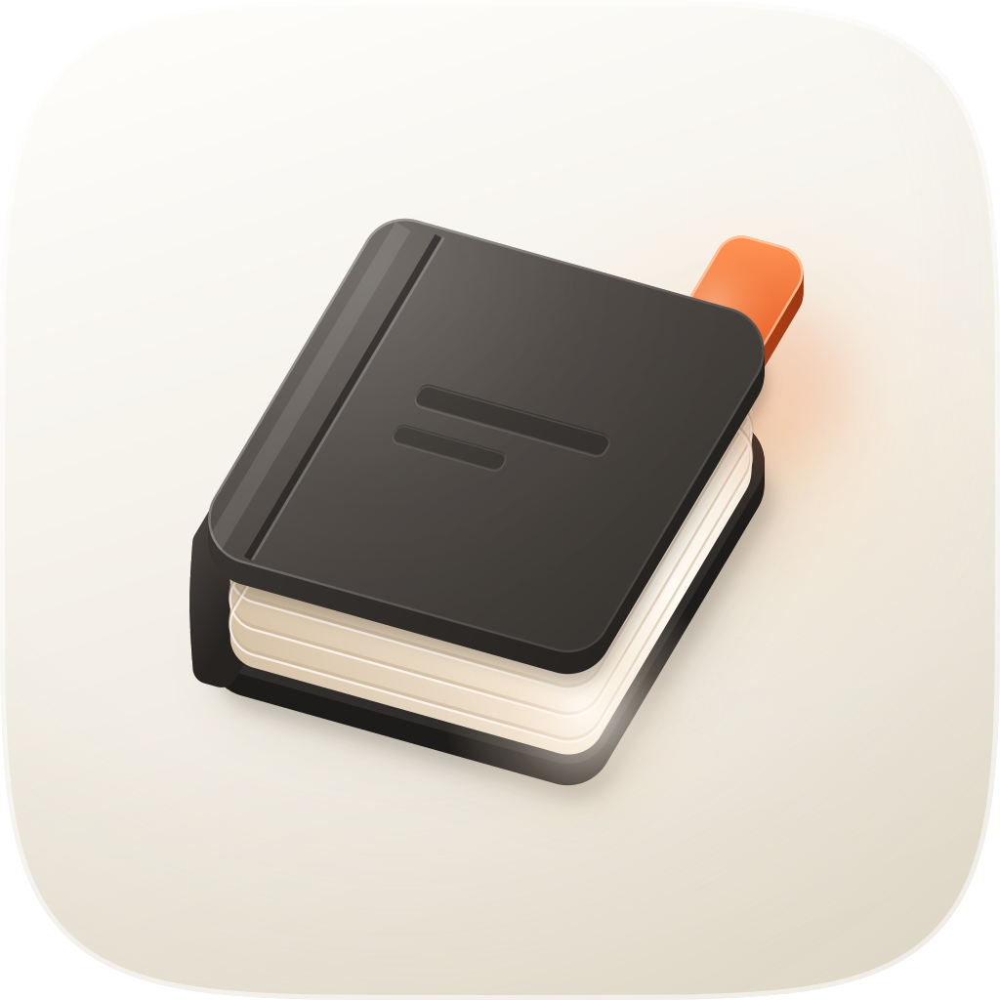
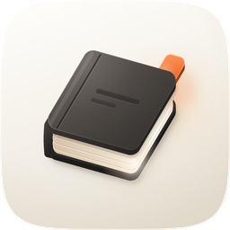
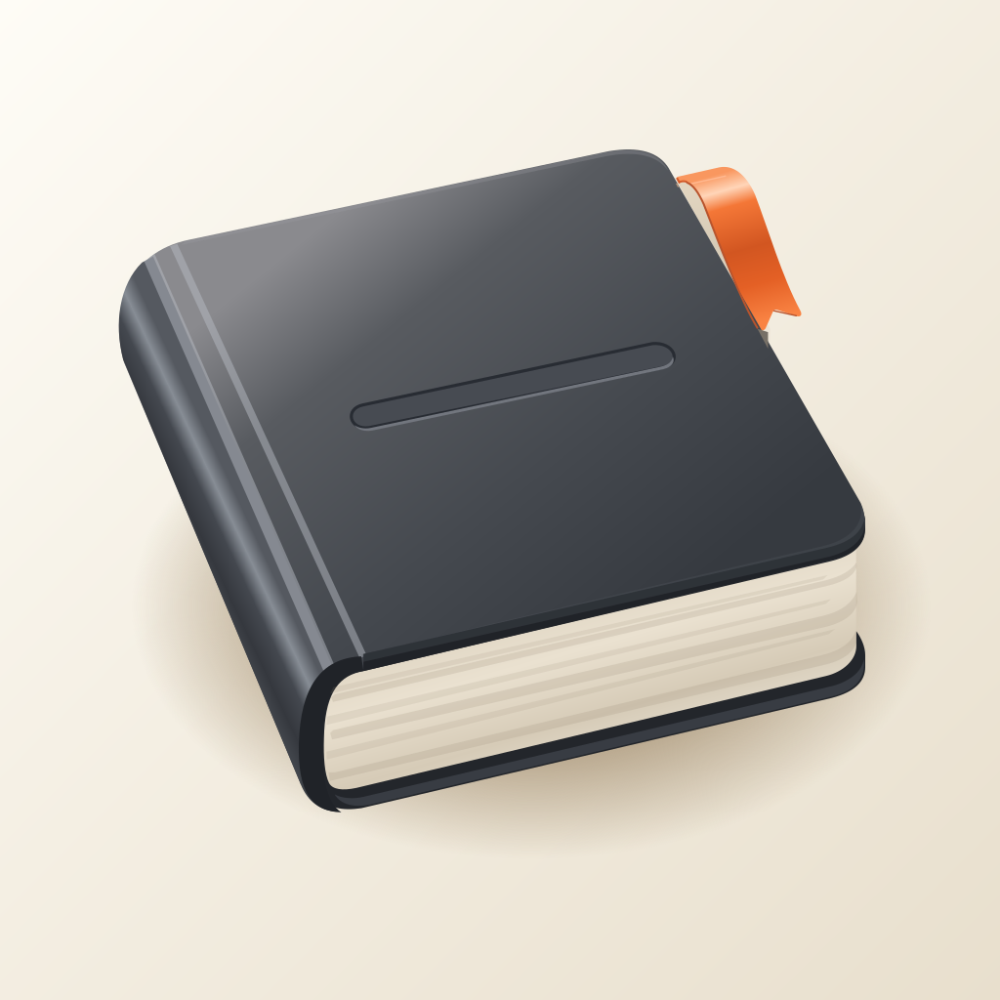
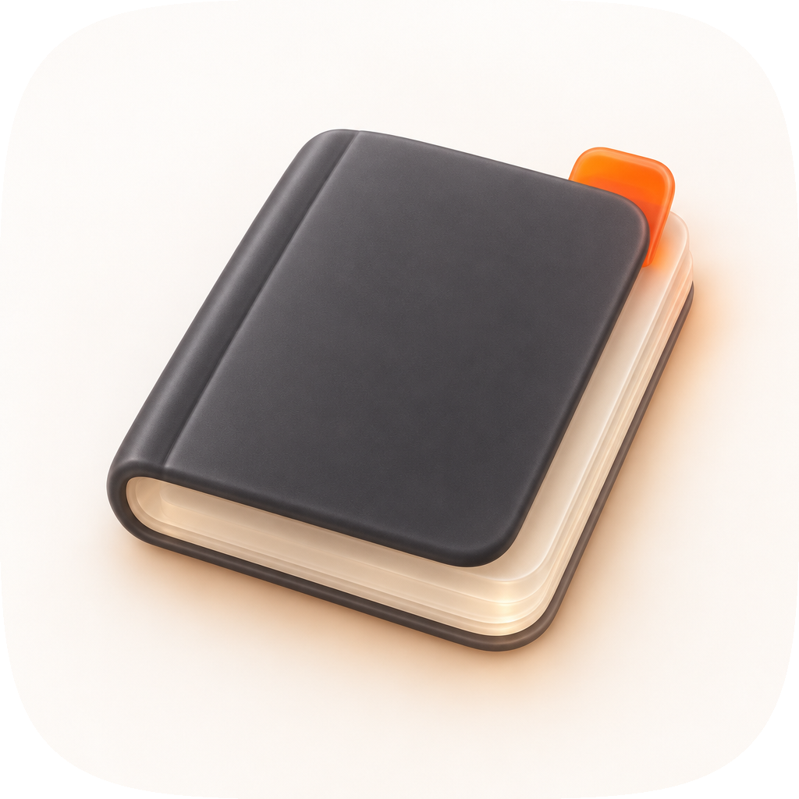
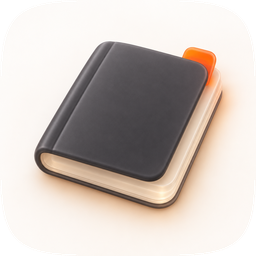
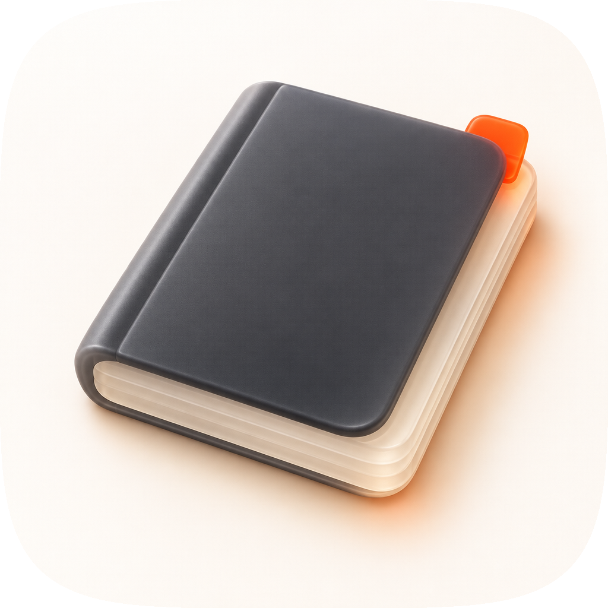
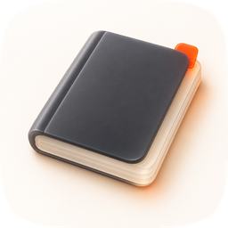

| Take | Hero at 1024, then renders at 128 / 64 / 48 / 32 / 16 css px (2× retina sources), plus the 16px squint magnified | Rubric | Verdict |
|---|---|---|---|
| master · icon.svgEngine A hand-authored layered SVG (build_icon.py) — SHIPS |   |
11 / 12 | Passes checks 1 to 4 (shared squircle mask, optical centering at ~68% span, unmistakable folio+tab silhouette, clean 16px survival) and matches the fledgeling porcelain ground ramp (#FDFCF9 to #E7E1D5), warm darks, and single vermilion accent (#EC6A31 / #C44D1B) with four named layers (bg/mid/fg/highlight) under 100 paths. Rebuilt spine wrap and fore-edge page ribs from Engine C Take 2; loses 1 point on #12 because SVG Gaussian blurs are slightly drier than raster subsurface scatter. |
| engineB · icon-engineB-arrow-8e0869.svgEngine B Arrow 2 SVG vector take |  |
7 / 12 | Loses on check 1 (square unmasked tile; needed trailing-byte cleanup after </svg> to parse), flat illustration shading, and oversized 78% folio footprint. Salvaged the debossed cover bar cue into Engine A while replacing the flat ribbon with Engine C's translucent gel tab. |
| engineC-1 · icon-engineC-raster-23173b-masked.pngEngine C GPT Image 2.6 Flare take 1 (squircle-masked) |   |
10 / 12 | Strong Tahoe gel-glass materiality and warm ember bounce on the frosted page block; loses points for raster non-editability (#10 variant robustness) and slightly brighter top-left porcelain corners that fade against white README backgrounds. |
| engineC-2 · icon-engineC-raster-d56987-2-masked.pngEngine C GPT Image 2.6 Flare take 2 (squircle-masked; material reference) |   |
10 / 12 | Material reference for Engine A: crisp three-layer frosted page ribs, tight satin spine highlight, and luminous translucent vermilion tab. Not shipped directly because the SVG master matches the fledgeling porcelain ground vignette and stays editable as named constants for banner derivation. |
build_icon.py with named geometry, light vector (LIGHT_DX=-0.62, LIGHT_DY=-0.78), and fledgeling shelf porcelain tokens; clears checks 1 to 4 across 1024 through 16px, passes fidelity.py structure with 4 named layers, and matches sibling icons on squircle-path.txt. Known liabilities to revisit: subsurface scatter inside the vermilion gel tab is simpler than Engine C Take 2's raster bloom, and the cover's two debossed index bars vanish below 32px (intentional so 16px reads cleanly as silhouette plus tab).python3 audit_sheet.py render (1024 / 256 / 128 / 96 / 64 / 32 sources); verified by audit_sheet.py check.